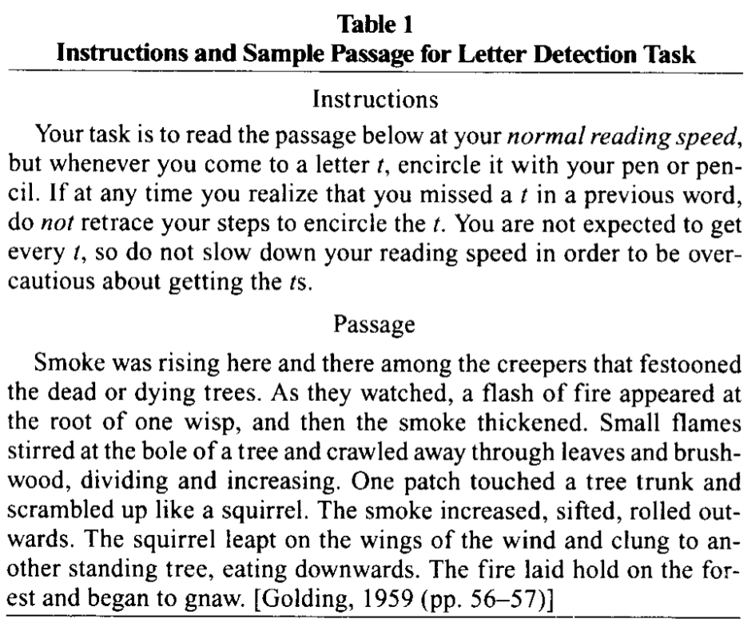

大腦、語言與心智：
我們如何處理語言？
台大語言所 博士後研究人員 曾昱翔
2020/8/18
### 一些很玄的問題 * 如果森林裡沒有人，樹倒下了，有聲音嗎？ * 如果沒有人，有語言嗎？ * 如果沒有語言，人能思考嗎？
### 語言，一種心智的功能 * 心智的各種功能 > 心理學家就像是頑皮的小孩－－他們好奇心智是怎麼回事，於是操弄各種奇怪的人事物，等著看人類心智出錯。
### 視錯覺 * Hermann's grid * rotsnake2 * Einstein vs. Monroe * Adelson's Checker-shadow illusion
### 80年代(變態的)社會心理學 * 史丹佛監獄實驗 * Milgram權威服從實驗
### 語言的錯覺(?!) * 字母偵測作業 * 中文字順序

### 「詞涯八千」－腦海中有字典嗎？ * 自由聯想 * 詞彙觸發 * 心理辭典
### 進入人類心智 * 行為實驗 * 反應時間
### 可是....反應時間量的，真的是心智嗎？ * 什麼是心智 ?! * 心智就是人類大腦發揮的功能 * 理解並改變大腦發揮的心智功能 * 理解並試圖重現心智功能
### 理解大腦如何發揮心智功能 * 我們得進入大腦 * 以前靠癲癇病患、靠經歷意外的個案 * 現在靠各式各樣生理量測或神經造影工具
### 神經造影儀器 * 眼動儀 * 腦電波 * 磁共振造影 * 腦磁波儀
### 理解並試圖重現心智功能 * ACT-R * 潛在語意分析 * 主題模型
### 只是，要重現心智功能，是不是一定要理解心智？ * David Marr 階層分析說 * McClelland & Rumelhart 的 類神經網絡 * Elman RNN
### 現在的深度學習 * RNN → LSTM * LSTM → Transformer * Transformer → BERT/GPT * 只要能把語言問題轉變成分類、序列學習或填空，且有資料，大概都能迎刃而解。
### 用科學的方法研究心智的功能 * 從躺椅到史金納箱 * 流程圖到統計參數圖 * 心智是看不見摸不著的：有實際的資料，大家總比較好一起往前進。
### 用資料認識世界 * 心理學家用大腦、生理或行為實驗 * 深度學習用輸入資料和標記資料 * 語言學家，用人類溝通的符號系統－語言－來認識（內在與外在）世界。